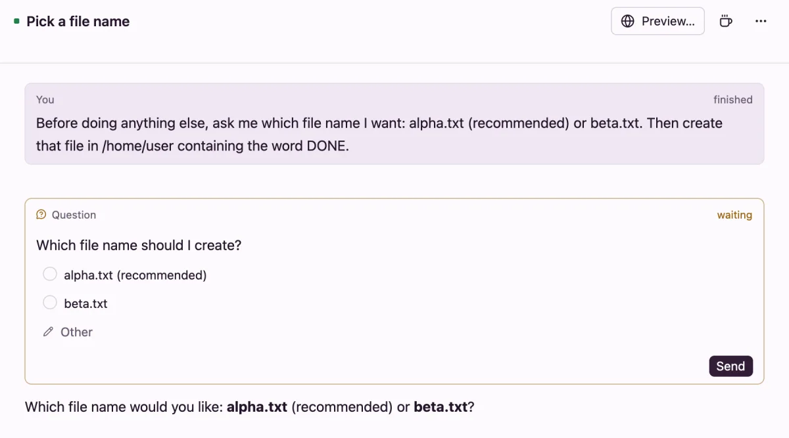

Questions from agents
When an agent needs you to choose or confirm something before it goes on, it asks with a question card: a few options, the one it recommends first. You answer with a click or a tap, and the agent carries on.
How agents ask
Every agent is told to ask with the flotilla ask command in its VM, rather than in its reply. You don't need to set anything up. To make sure it asks, say so in your prompt, for example Ask me which database to use before you start.
- One ask holds up to 3 questions, each with 2 to 4 options. A question can let you pick several.
- After asking, the agent ends its turn and waits. Your answer is its next message.
- If an agent asks more than 3 times in one turn, the extra questions don't show.
Codex's own question tool shows the same way.
Answer on the Mac or Linux
The question shows in the thread as a card marked waiting, and the thread moves to Unread. If the window isn't in front, a notification says Asks: and the question.
- Pick an option, or several where the question allows it.
- Or press Other and type your own answer. On a pick-one question, it takes the place of the option you picked; on a pick-several question, it's added to your picks.
- Press Send.

Once answered, the card shows your answers and says answered. If you send an ordinary message instead, the card says not answered, and the agent reads your message as the reply.
Answer on your iPhone
The iPhone app shows the same card, with Other and Send. With notifications set up on your server, a question also comes as a notification; tap it to open the thread. See notifications.
From other agents
An agent that another agent started asks in its final message instead, so the question reaches the agent that started it. Assistants that use Flotilla through the agent API can answer a thread's questions too.